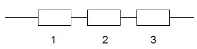
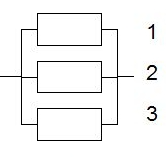
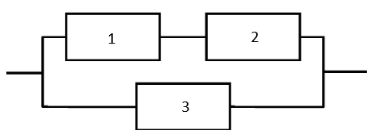

Topic 14 Basic Order Statistics
(Similar contents can be found in Section 7 of chapter 6)
This note discusses the method of transformation for finding the probability distributions of functions of random variables in both univariate and multivariate cases.
A Motivational Example: Consider a n-component reliability system in which the component lifetimes \(\{ X_1, X_2, \cdots, X_n \}\) are exponential random variables with rate parameters \(\lambda_1, \lambda_2, \cdots, \lambda_n\), respectively. We can define the order statistics in the following
\(X_{(1)} = \min \{X_1, X_2, \cdots, X_n \}\)
\(X_{(2)} = \text{ the 2nd smallest of } X_1, X_2, \cdots, X_n\)
\(X_{(3)} = \text{ the 3rd smallest of } X_1, X_2, \cdots, X_n\)
\(\cdots \cdots \cdots \cdots \cdots\cdots\)
\(X_{(n)} = \max \{X_1, X_2, \cdots, X_n \}\)
The general objective is to find the distribution of \(X_{(i)}\) for \(i = 1, 2, \cdots, n\). Since order statistic \(X_{(i)}\) is defined on the set of all existing random variables \(\{ X_1, X_2, \cdots, X_n \}\), So \(X_{(i)}\) is a function of \(\{ X_1, X_2, \cdots, X_n \}\). In this note, we will discuss some special order statistics.
14.1 Distribution of Minimum Statistic \(X_{(1)}\)
In a reliability system, a series system needs all of its components to function for the system itself to be functional. Assuming the serial system has \(n\) independent components with corresponding lifetimes \(\{ X_1, X_2, \cdots, X_n \}\). In this situation, the lifetime of a serial system is \(X_{(1)} = \min \{X_1, X_2, \cdots, X_n \}\). We next derive the distribution of \(X_{(1)}\) so we can calculate the mean, variance, and other numeric measures of \(X_{(1)}\).

Example 1 Consider an independent n-component series system in which the component lifetimes \(\{ X_1, X_2, \cdots, X_n \}\) are exponential random variables with rate parameters rates \(\lambda_i\) for \(i = 1,2, \cdots, \lambda_n\). Let \(Y\) denote the lifetime that the system fails. What is the distribution of \(Y\)?
Solution: Since the density function of \(i\)-th component’s lifetime is given by
\[ f_i(x) = \lambda_i e^{-\lambda x}, \ \ \ \text{ for } \ \ x > 0. \]
Its CDF is given by
\[ F_i(x) = 1 - e^{-\lambda_i x}. \]
Using the CDF method, we derive the distribution of \(Y_{(1)}\) as follows.
\[ f_{Y_{(1)}}(y) = P[Y_{(1)} \le y] = P[\min \{X_1, X_2, \cdots, X_n \} \le y] = 1-P[\min \{X_1, X_2, \cdots, X_n \} > y] \]
Since the smallest lifetime is bigger than \(y\), therefore, every \(X_i\) is greater than \(Y\). Equivalently, event \(\min \{X_1, X_2, \cdots, X_n \} > y\) is identical to \(\{X_1 >y \cap X_2 >y \cap \cdots \cap X_n >y\}\). Using the assumption that the components’ lifetimes are independent, we have
\[ P[\min \{X_1, X_2, \cdots, X_n \} > y] = P[X_1 >y \cap X_2 >y \cap \cdots \cap X_n >y] \]
\[ = P[X_1 >y] \times P[ X_2 >y] \times \cdots \times P[ X_n >y] = \big(1-P[X_1 \le y]\big) \times \big( 1-P[ X_2 >y]\big) \times \cdots \times \big( 1- P[ X_n >y] \big) \]
\[ = \big(1-[1-e^{-\lambda_1y}]\big) \times \big( 1-[1-e^{-\lambda_2y}]\big) \times \cdots \times \big( 1- [1-e^{-\lambda_ny}] \big) = e^{-\lambda_1y}\times e^{-\lambda_2y}\times \cdots \times e^{-\lambda_ny} = e^{-(\lambda_1 + \lambda_2 + \cdots + \lambda_n)y}. \]
Hence, the CDF of \(Y_{(1)}\) is given by
\[ F_{Y_{(1)}}(y) = 1 - e^{-(\lambda_1 + \lambda_2 + \cdots + \lambda_n)y}. \]
The corresponding PDF is given by
\[ f_{Y_{(1)}}(y) = (\lambda_1 + \lambda_2 + \cdots + \lambda_n) e^{-(\lambda_1 + \lambda_2 + \cdots + \lambda_n)y}. \]
We can see that the minimum statistics is also an exponential distribution with rate \(\lambda = \lambda_1 + \lambda_2 + \cdots + \lambda_n\).
Example 2: We now look at a numerical example. Consider a 3-component series system: where each component has an exponential lifetime with rates \(0.2, 0.3\), and \(0.5\), respectively. Find the probability that the system fails in one unit of time.
Solution: From the result of the above example, the time to failure of the series system is \(Y_{(1)}\) that has distribution
\[ F_{Y_{(1)}} (y) = 1 - e^{-(0.1 + 0.2 + 0.5)y} = 1 - e^{-y}. \]
The probability that the system fails in one unit of time is given by
\[ P(Y_{(1)} < 1) = 1-e^{-1} \approx 0.632. \]
14.2 Distribution of Minimum Statistic \(X_{(m)}\)
We also use a reliability system as an example. A parallel system is one that needs only one of its components to function in order for the system itself to be functional . Assuming the parallel system has \(n\) independent components with corresponding lifetimes \(\{ X_1, X_2, \cdots, X_n \}\). In this situation, the lifetime of a serial system is \(X_{(n)} = \max \{X_1, X_2, \cdots, X_n \}\). We next derive the distribution of \(X_{(n)}\) so we can calculate the mean, variance, and other numeric measures of \(X_{(n)}\).

Example 3 Consider an independent n-component parallel system in which the component lifetimes \(\{ X_1, X_2, \cdots, X_n \}\) are exponential random variables with rate parameters rates \(\lambda_i\) for \(i = 1,2, \cdots, \lambda_n\). Let \(Y\) denote the lifetime that the system fails. What is the distribution of \(Y\)?
Solution: Since the density function of \(i\)-th component’s lifetime is given by
\[ f_i(x) = \lambda_i e^{-\lambda x}, \ \ \ \text{ for } \ \ x > 0. \]
Its CDF is given by
\[ F_i(x) = 1 - e^{-\lambda_i x}. \]
Using the CDF method, we derive the distribution of \(Y_{(1)}\) as follows.
\[ f_{Y_{(n)}}(y) = P[Y_{(n)} \le y] = P[\max \{X_1, X_2, \cdots, X_n \} \le y] \]
Since the largest lifetime is less than \(y\), therefore, every \(X_i\) is less than \(Y\). Equivalently, event \(\max \{X_1, X_2, \cdots, X_n \} \le y\) is identical to \(\{X_1 \le y \cap X_2 \le y \cap \cdots \cap X_n \le y\}\). Using the assumption that the components’ lifetimes are independent, we have
\[ P[\max \{X_1, X_2, \cdots, X_n \} \le y] = P[X_1 \le y \cap X_2 \le y \cap \cdots \cap X_n \le y] \]
\[ = P[X_1 \le y] \times P[ X_2 \le y] \times \cdots \times P[ X_n \le y] =[1-e^{-\lambda_1y}]\times [1-e^{-\lambda_2y}]\times \cdots \times [1-e^{-\lambda_ny}]. \]
Therefore,
\[ F_{Y_{(n)}}(y) = [1-e^{-\lambda_1y}]\times [1-e^{-\lambda_2y}]\times \cdots \times [1-e^{-\lambda_ny}]. \]
Example 4: We now modify the system we discussed in Example 2. Consider a 3-component parallel system: where each component has an exponential lifetime with rates \(0.2, 0.3\), and \(0.5\), respectively. Find the probability that the system fails in one unit of time.
Solution: We use the \(CDF\) derived in the above example 3
\[ F_{Y_{(3)}}(y) = [1-e^{-0.2y}]\times [1-e^{-0.3y}]\times [1-e^{-0.5y}]. \]
The probability that the system fails in one unit of time is given by
\[ P(Y_{(1)} < 1) = [1-e^{-0.2}]\times [1-e^{-0.3}]\times [1-e^{-0.5}] \approx 0.0185. \]
This means the probability the parallel system’s lifetime is less than one unit of time is 1.85%, that much less 63.2% for a series system.
14.3 Combined Reliability System
We have discussed the simplest reliability systems: series and parallel systems. The actual reliability systems usually consist of combined series and parallel components. For example, the following figure depicts a system with both series and parallel components.

We now use the derived CDF in Sections 1 and 2 to derive the lifetime distribution of the combined system shown in the above system.
Example 5: Consider the above combined system. Let \(\{X_1, X_2, X_3 \}\) be the random variables representing lifetimes of three independent components in the above system respectively. Assume also that all three systems follow the same exponential distributions with rates \(\lambda_1, \lambda_2\), and \(\lambda_3\), respectively. Find the probability distribution of lifetime.
Solution: First we know that the lifetime of the above combined three-component system \(Y= \max \{ \min\{X_1, X_2 \}, X_3 \}\) (think about why?). The CDF of \(Y\) is defined to be
\[ F_Y(y) = P[Y \le y] = P[\max \{ \min\{X_1, X_2 \}, X_3 \} \le y] = P[ \min\{X_1, X_2 \} \le y \cap X_3 \le y] \]
\[ = P[ \min\{X_1, X_2 \} \le y] \times P[ X_3 \le y] = \left( 1 - P[\min\{X_1, X_2 \} > y] \right) \times P[ X_3 \le y] \]
\[ = \left( 1 - P[X_1 >y]\times P[X_2 \} > y] \right) \times P[ X_3 \le y] \]
\[ =\bigg( 1 - [1-e^{-\lambda_1 y}]\times [1-e^{-\lambda_2 y}] \bigg) \times \bigg( 1-\lambda_2 e^{-\lambda_3 y}\bigg) \]
\[ =\bigg(e^{-\lambda_1y} + e^{-\lambda_2 y} - e^{-(\lambda_1 + \lambda_2)y} \bigg)\bigg( 1- e^{-\lambda_3 y}\bigg). \]
Next, we modify examples 2 and 4 with numerical rates.
Example 6: Consider the above 3-component combined system: where each component has an exponential lifetime with rates \(\lambda_1 =0.2, \lambda_2 = 0.3\) and \(\lambda_3 =0.5\), respectively. Find the probability that the system fails in one unit of time.
Solution: Using the above derived CDF of the combined system, we
\[ P[Y \le 1] = \bigg(e^{-0.2} + e^{-0.3} - e^{-(0.2 + 0.3)} \bigg)\bigg( 1- e^{-0.5}\bigg) \approx 0.375. \]
The probability that the combined system fails in one unit of time is about 37.5%, as expected, that is between 1.85% (for the parallel system) and 63.2% (for the series system).